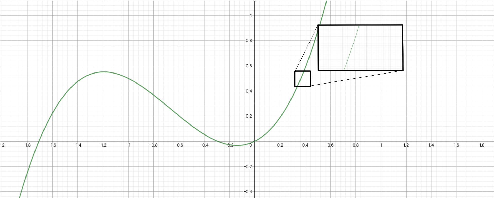
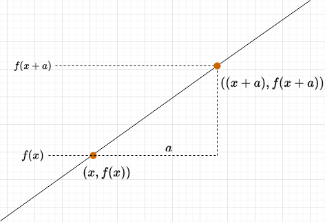

Monovariable Calculus#
Calculus is the most powerful weapon of thought yet devised by the wit of man.
Wallace B. Smith
Calculus is the study of continuous change: a simple set of concepts that can be applied to the most complex of systems. Nearly all of modern-day science is built on calculus, especially physics; it is quite the tool to have in your engineer’s toolbox!
Over its nearly 400-year history, calculus has evolved into perhaps the most versatile and broad field of mathematics. There is multivariable calculus, vector calculus, stochastic calculus, the calculus of variations, tensor calculus, fractional calculus…we could go on and on…
However, a lifelong journey through calculus begins with monovariable calculus (or just “calculus”). In monovariable calculus, we’re concerned with developing the fundamental ideas of calculus. These ideas will carry over to all the more advanced forms of calculus. Through them, you’re realize how calculus has such versatility and power.
Limits#
The limit is the value a function approaches as \(x\) approaches a given value.
For instance:
While the function is not defined at \(x = 1\), it approaches 2 as \(x\) approaches 1, thus we can say:
Sometimes, limits are the same regardless of the direction \(x\) approaches \(c\). At other times, the limit is different, and dependent on the direction. For instance, take:
As \(x\) approaches 3 from the right-hand side, \(f(x)\) approaches infinity, and as \(x\) approaches 3 from the left-hand side, \(f(x)\) approaches negative infinity. Thus, we can say there are separate left-hand and right-hand limits, where:
(DNE means “does not exist”)
Notice that as the limit is infinite, and infinity is not a real number, we do not say that the limit of the function is infinity. Rather, we say that the limit does not exist.
The limit of a function does not exist in one of three cases:
If the function’s left- and right-hand limits are not equal at that x-value
If the function oscillates in value around an x-value
If the function becomes indefinitely large around an x-value
Derivatives#
The equation for the slope of a line is defined as:
However, the slope equation only works for straight lines. How, then, could we find the slope of a curve?
Well, we can first take advantage of the fact that if you zoom really close in to a curve, it looks like a straight line:
{kind=link}
Notice how, as we zoom into the curve, the curve looks more and more like a straight line, and the curvature becomes less and less noticeable.
The derivative is a function that tells you the slope of another function at any point. You can think of it as an “upgraded” version of the slope formula. We find the derivative by taking two points, \((x, f(x))\) and \(((x + a), f(x+a))\), and calculating the slope from them:
{kind=link}
As we shrink \(a\) and make it smaller and smaller, \(a\) will approach zero, and the slope becomes:
So, for a function \(f\), the derivative \(\frac{df}{dx}\) is defined as the limit by taking \(a\) smaller and smaller:
An alternative understanding of the derivative#
A more intuitive, but less mathematically rigorous, definition of the derivative is to look at the slope formula once again:
Now, let’s imagine making the change \(\Delta\) smaller and smaller. The eventual result is that \(\Delta y\), a small change, becomes a tiny change \(dy\), and \(\Delta x\), a small change, becomes a tiny change \(dx\):
(Opinionated) derivative notation#
Calculus was invented at roughly the same time by two brilliant mathematicians - Gottlieb Leibniz and Isaac Newton. Unfortunately, each of them published their work at the same time with differing notations. Leibniz wrote the derivative with the notation \(\frac{df}{dx}\); Newton used the notation \(\dot f\). Lagrange and Euler, not long after, came up with the notation \(f'(x)\). In any case, Leibniz and Newton…got into a fight, which became a political controversy, and other mathematicians decided to develop other notations as well. So, sadly, there is not a unified notation around calculus.
The most common form of notation is Leibniz’s notation, where the derivative of \(f(x)\) is written like this:
The nth-derivative is written as:
Important
Note: Even though this looks like a fraction, and can be manipulated similar to fractions, the derivative in Leibniz’s notation is absolutely not the same as a fraction!
The second most common notation is Langrange’s notation, where the derivative of \(f(x)\) is written like this:
Here, the nth-derivative is written as:
In Project Elära, derivatives of a single-variable function use Leibniz notation most commonly to minimize confusion. The derivative of a function \(f(x)\) in Project Elära is preferred to be written as:
If we have a function \(v(t)\), the derivative with respect to \(t\) would be written as:
A higher order derivative (e.g. second derivative) is written like this:
The derivative evaluated at a certain point \(x = a\) is written as:
However, there are some alternate notations that will sometimes be used. Note that these are all equivalent:
You will also see \(\dot f\) and \(\ddot f\) sometimes for first and second time derivatives respectively. This is recommended not to be used as it is easily notationally confused.
Differentiation#
The derivative is a very powerful function, but finding the derivative of a function unfortunately requires a bit of time and patience. This is because there is no universal formula for finding the derivative of a certain function - instead, we have general rules for finding the derivatives of a certain type of function, which we use in the process of differentiation.
Let’s start with the easiest derivative - the derivative of any constant function is zero. Why? Because the slope of any constant function is always zero, and remember, the derivative is a function that tells you the slope at every point. So if the slope at every point is zero, the derivative will always be zero.
We call this the constant rule, and we write it out like this:
Where \(n\) can be any constant. For instance, the derivative of 2 with respect to \(x\) (the same as finding the rate of change of \(f(x) = 2\)) would be:
This also means that if you have a function \(f(x) = c\), where \(c\) is a constant, then:
That should be simple enough, right?
Now, let’s do the second-easiest derivative. The derivative of the exponential function \(f(x) = e^x\) is itself. We call this the exponential rule, and we write it out like this:
The exponential rule can also be more generally written as this:
For trigonometric functions, the derivatives unfortunately have to be memorized, but you just have to memorize two of them to find the derivatives of all trigonometric functions:
And for polynomial functions, we can use the power rule:
The power rule applies to linear functions in the form \(y = mx +c\):
As well as for rational functions in the form \(f(x) = \frac{1}{x^n}\):
And nth root functions (e.g. square root, cube root, etc.) in the form \(f(x) = \sqrt[n]{x}\):
Combining the power rule and exponential rule gives us the derivatives of logarithms:
However, most functions are made from a combination of these functions. For instance, the function \(f(x) = 2x^2 + 3x + 5\) is a combination of a constant function, linear function, and power function. To find the derivatives of combinations of functions, we have a few more rules to help us.
First, we have the sum rule:
Then, the constant coefficient rule:
Then, the product rule:
From the product rule, we can derive the quotient rule:
And, most importantly, we have the chain rule. The chain rule is used for composite functions - functions that have been nested into each other. For instance, \(h(x) = \sin x^2\) is made by nesting the function \(g(x) = x^2\) inside of the function \(f(x) = \sin x\). So, we can say that \(h(x) = f(g(x))\). This is a composition of functions.
With that in mind, the chain rule is written like this:
This means we nest \(g(x)\) in the derivative of \(f(x)\) and multiply that by the derivative of \(g(x)\). The other rules here are mostly self-explanatory, but I’ll go through a worked example with the chain rule: let’s try to find the derivative of \(h(x) = \cos x^2\).
Practicing the chain rule#
We use the chain rule for composite functions, like our example, \(h(x) = \cos x^2\). We know that we can rewrite \(h(x)\) as a composite function \(f(g(x))\), where:
We can now use the chain rule. In the first step, we find \(\frac{dh}{du}\):
Note that we substituted in \(x^2\) for \(u\). Now, we find \(\frac{du}{dx}\):
We now just need to multiply them together:
That’s our answer!
Reciprocal derivatives#
In monovariable calculus only, derivatives follow the reciprocal rule:
Tangent to a curve#
The tangent to the function \(f(x)\) at \(x = a\) is given by the function \(T(x)\), where:
This is also called the linear approximation of a function.
Higher-order derivatives#
Taking a derivative nth times gives you the nth derivative of a function. For example, taking the derivative of the derivative is the second derivative, the derivative of the second derivative is the third derivative, and so on. Going in the other direction, the 0th derivative is not taking the derivative at all - the same as the original function.
The second derivative is the most common higher-order derivative, and it is given by:
The order of the derivative is the number of times you take the derivative: for instance, the 7th derivative involves taking the derivative of a function 7 times! (don’t do that, please…)
Finding maxima and minima#
We can find the critical points (maxima and minima) of a function \(f(x)\) by finding its derivative and setting it to zero:
For instance, for the function \(f(x) = 2x^2 + 1\):
Then, plugging in that x value into the original f(x), we can find the y value of the maximum/minimum point:
So the minimum of \(f(x)\) is the point \((0, 1)\). How do we know if it’s a maximum or minimum though? To find out, we use the second derivative, which measures how the slope changes. If a point is a maximum, the slope will change from positive to negative around that point; if a point is a minimum, vice-versa. So:
The second derivative of \(f(x)\) is the derivative of its derivative, which we can find like this:
Since \(\frac{d^2 f}{dx^2} > 0\), we know that the point \((0, 1)\) has to be a minimum.
Implicit differentiation#
Implicit differentiation is when we differentiate with respect to an intermediary variable, often used when the object being differentiated is not a function. For instance, consider the equation of a circle:
To implicitly differentiate it, we have:
The right-hand side is straightforward:
The sum rule can be used for the left-hand side:
To implicitly differentiate \(y^2\), we can use the chain rule:
So:
Rearranging the terms, we find that:
Problem: Suppose that \(y = x^2 + 3\). Find \(\frac{dy}{dt}\) when \(x = 1\), \(\frac{dx}{dt} = 2\).
We implicitly differentiate \(y\) to find:
Then we plug in the values for \(x\) and \(\frac{dx}{dt}\) to find that:
Antiderivatives#
The antiderivative is the function \(F(x)\) that is the original function of a derivative \(f(x)\). For instance, the antiderivative of \(2x\) is \(x^2\), because if \(2x\) is the derivative, then the original function is \(x^2\):
The indefinite integral is another name for the antiderivative. The indefinite integral is written as:
The \(C\) is due to the fact that the integral returns a family of antiderivatives, as any derivative has infinitely many antiderivatives.
Just like derivatives, indefinite integrals follow certain rules:
Constant rule:
Inverse power rule:
Sum and difference rule:
Constant factor rule:
An intuitive understanding#
Suppose we have the derivative of a function, and that derivative is \(f(x)\). We now want to find the original function \(F(x)\) that derivative came from. To do so, we notice that:
So if we rearrange the terms, we get:
Now, \(dF\) is similar to saying “a tiny tiny change in F”. If we add lots of \(dF\)’s together, it would seem reasonable that we would get \(F\):
Only in integral calculus, we replace the summation symbol with the integral symbol \(\int\), so it becomes:
Integration#
Area under a curve#
Up to this point, we’ve only seen one type of integral - the indefinite integral, used for finding the original function given its derivative. Now, we will explore another type of integral, the definite integral, which returns an area rather than a function. The definite integral looks like this:
Intuitively, the definite integral gives the area underneath a curve. It does this by creating tiny rectangles under that curve:

We can find the area by summing the areas of the rectangles we place under the curve. As more rectangles are used, the approximation becomes closer to the true area. Taking the limit as the number of rectangles approaches infinity, we find the true area underneath the curve:
Several properties of the definite integral include:
Average value of a function#
The average (mean) value of a function on \([a, b]\) is given by:
The fundamental theorem of calculus#
Derivatives, indefinite integrals, and definite integrals are related by the fundamental theorem of calculus (FTC). The theorem consists of two parts.
The first part of the FTC states that if you have an original function \(F(x)\) whose derivative is \(f(x)\), then taking the indefinite integral of the derivative gives you the original function:
The FTC #1 establishes that differentiation and integration are inverse operations. The derivative is the rate of change, whereas the integral finds the accumulated net change.
Then the second part of the FTC states that the definite integral, which is the area underneath the curve of \(f(x)\), is given by evaluating the indefinite integral between the bounds of the curve:
This means that when we know the indefinite integral of a function, we can use the FTC as a shortcut to evaluating the definite integral.
For instance, let’s try to evaluate the area under the curve of \(f(x) = x^2\) from \(x = 0\) to \(x = 3\):
We first find the indefinite integral of \(f(x)\) - the original function whose derivative is \(x^2\). We can use the inverse power rule for this:
Thus the indefinite integral of \(f(x)\) is equal to:
Now, we just evaluate \(F(3) - F(0)\):
The two \(C\)’s cancel and we are simply left with:
Thus:
U-substitution#
Just as we have the chain rule for derivatives, we have a sort of “reverse” chain rule for evaluating indefinite integrals. We begin with a typical integral:
And we want to express the integrand \(f(x)\) in terms of another function \(g(u)\). To do this, we define:
Therefore:
which is essentially a reverse chain rule. Why would we do this though? Doesn’t it make integrals more complicated? While the formula may seem scary, the reality is that with clever cancelling, u-substitution can make integrals a lot easier to solve. Take, for instance:
Here, we identify the part of the integral that we want to make our \(u\). Usually, this is an annoyingly complex part of the integral that we want to make simpler with u-substitution. In this case, it would be \(u = 16 - x^4\). So:
Now, we can substitute \(16-x^4\) for \(u\):
And substitute \(\frac{du}{-4x^3}\) for \(dx\):
And magically we find that the \(x^3\) and \(-4x^3\) cancel, leaving us with an integrand completely in terms of \(u\):
We can make the integral even simpler by moving the constant factor outside the integral:
We’ve successfully greatly simplified the integral!
Solving this integral in terms of \(u\) is easy:
We just need to remember to now replace \(u\) with its value in terms of \(x\):
So we evaluated a difficult integral using u-substitution to find its answer!
Integration by parts#
Integration by parts is given by:
It is the integral form of the product rule for derivatives. Unsurprisingly, it is often used for integrating products of functions. To illustrate this, let’s consider integrating \(f(x) = x \sin (x)\):
To integrate, we first pick our \(u\) and \(dv\). We generally want \(u\) to be a function that is easy to differentiate, and \(dv\) to be a function that is easy to integrate. Here, we will pick \(u = x\), \(dv = \sin(x)\). So:
Using the integration by parts formula, we have:
Which simplifies to:
Other integration rules#
There are several other notable integration tricks such as integrating by partial fractions, integrating by trigonometric substitutions, using trig identities, long division, and other algebraic methods for solving indefinite integrals. A full list of them can be found at https://brilliant.org/wiki/integration-tricks/. Another way to solve complicated integrals is to refer to integral tables, which contain precomputed tables of common integrals - see https://en.wikipedia.org/wiki/Lists_of_integrals.
Integral calculators#
When integrals are too difficult to solve using any known method, consult an online integral calculator! Some very good ones are https://mathdf.com/int/ and https://www.wolframalpha.com. Additionally, for relatively simple expressions (to type in), consult https://gamma.sympy.org/. The SymPy Python library is also well worth learning to do symbolic integration on a computer.
Taylor series#
Imagine we had a certain function \(f(x)\). We want to approximate that function with a polynomial \(T(x)\). So we write the general equation of a polynomial centered at \(x = a\):
Now, for this function to be equal to \(f(x)\), then \(T(a) = f(a)\). So we compute \(T(a)\):
Since \(a - a\) cancels to zero, every term in the equation cancels to zero other than \(c_0\), so:
But we know that \(T(a) = f(a)\). So we can rewrite \(T(x)\) as:
Alright, but just having two functions be equal at a single point isn’t enough to make sure that these two functions are equal. To be more sure that the two functions are equal, we demand \(T'(a) = f'(a)\) must be true as well. If we compute \(T'(x)\), we’d get:
Once again, if we compute \(T'(a)\), the terms all cancel other than the first, so we have:
Again, since all the \(a - a\) terms cancel to zero, we are left with just one term, where:
But again, we know that \(T'(a) = f'(a)\), so we can rewrite \(T(x)\) as:
Still, we can’t be certain that \(T(x) = f(x)\). We don’t just want their values and their first derivatives to match at \(x = a\) - we want their second derivatives to match too! So we do the same exercise - take the second derivative of \(T(x)\). We get:
Once again, if we solve for \(T''(a)\), every term except for the first cancel to yield zero, so we get:
But we said that \(f''(a) = T''(a)\), so:
So \(T(x)\) is now:
You might be noticing a pattern here! In fact, if we take the general expression of \(T(x)\):
Then the nth-term of \(T(x)\) would be:
If we take the derivative of the nth term, using the power rule, we get:
Here we can write \(n(n - 1)(n-2)(n-3) \dots (3)(2)(1)\) as \(n!\) (we call that “n-factorial”). For example, \(3! = 3 \times 2 \times 1 = 6\). We can also rewrite \(n-n = 0\), and anything raised to the power of zero is just one, so we get this expression for the nth-derivative of \(T\):
And if we demand that the nth-derivative of \(f(x)\) is equal to the nth-derivative of \(T(x)\) at \(x = a\), then:
If we solve for \(c_n\), we get:
Then if we plug this back in to the infinite sum representation of \(T(x)\), replacing \(c_n\) with what we derived:
This is the formula for the Taylor series of a function. For practical purposes, we usually don’t let the sum range from 0 to infinity, and instead cap the sum at some number, which we call the order of the resulting polynomial. For example, the 7th-order Taylor polynomial is a Taylor series capped at 7 terms.
We can use the Taylor series to compute the values of transcendental functions (the exponential function, logarithmic function, and trigonometric functions), given known values of a function. For example, using a 7th-order Taylor approximation at \(a = 0\) and range reduction techniques to rescale any value of the sine function to between \(-\frac{\pi}{4}\) and \(\frac{\pi}{4}\), you can calculate the value of the sine function to within an error of \(\pm 3.6 \times 10^{-6}\) of the correct value.
The Taylor series is also a method of calculating the precise value of \(e\), Euler’s number, to use in calculations of the exponential function. To do so, we first need to recognize that \(e^0 = 1\), as with any other number raised to the power of zero. We also know that because \(\frac{d}{dx} e^x = e^x\), the nth-derivative of \(e^x\) will always be \(e^x\), and thus the nth-derivative \(f^{(n)} (0)\) is always going to be \(e^0 = 1\). Plugging that into our Taylor series, and setting \(a = 0\) (as our point of reference is \(x = 0\)), we have:
Which becomes:
Now, given also that we know that \(e^1 = e\), then \(T(1) = e\), so:
And since \(1^n = 1\), we have:
Which results in:
You can also find \(\pi\) using Taylor series in a similar manner (just with a Taylor approximation of the arctangent or arcsine function instead).
Taylor series are also good for approximating complex functions. For example, the Taylor series for \(\sin(x)\) starts with:
Which means the first-order Taylor polynomial for \(\sin(x)\) is just:
This is called the small-angle approximation to the sine function, and it is very powerful - as we’ll see later, it allows many complicated differential equations to be simplified and made solvable.